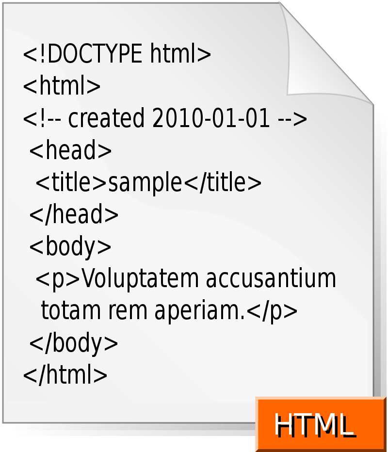
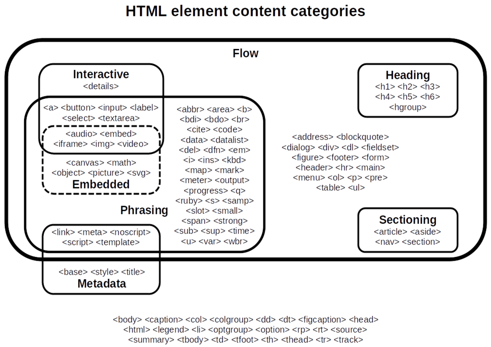

HTML (от англ. HyperText Markup Language — «язык гипертекстовой разметки») — стандартизированный язык гипертекстовой разметки документов для просмотра
веб-страниц
в браузере. Веб-браузеры получают HTML документ от сервера по протоколам
HTTP/HTTPS
или открывают с локального диска, далее интерпретируют код в интерфейс, который будет отображаться
на экране монитора.
HTML (от англ. HyperText Markup Language — «язык гипертекстовой разметки») — стандартизированный язык гипертекстовой разметки документов для просмотра
веб-страниц
в браузере. Веб-браузеры получают HTML документ от сервера по протоколам
HTTP/HTTPS
или открывают с локального диска, далее интерпретируют код в интерфейс, который будет отображаться
на экране монитора.
Элементы HTML являются строительными блоками HTML страниц. С помощью HTML разные конструкции, изображения и другие объекты, такие как интерактивная веб-форма, могут быть встроены в отображаемую страницу. HTML предоставляет средства для создания заголовков, абзацев, списков, ссылок, цитат и других элементов. Элементы HTML выделяются тегами, записанными с использованием угловых скобок. Такие теги, как <img /> и <input />, напрямую вводят контент на страницу. Другие теги, такие как <p>, окружают и оформляют текст внутри себя и могут включать другие теги в качестве подэлементов. Браузеры не отображают HTML-теги, но используют их для интерпретации содержимого страницы.
Язык XHTML является более строгим вариантом HTML, он следует синтаксису XML и является приложением языка XML в области разметки гипертекста.
В HTML можно встроить программный код на языке программирования JavaScript, для управления поведением и содержанием веб-страниц Также включение CSS в HTML описывает внешний вид и макет страницы.
Общее представление
Язык гипертекстовой разметки HTML был разработан британским учёным Тимом Бернерсом-Ли приблизительно в 1986—1991 годах в стенах ЦЕРНа в Женеве в Швейцарии. HTML создавался как язык для обмена научной и технической документацией, пригодный для использования людьми, не являющимися специалистами в области вёрстки. HTML успешно справлялся с проблемой сложности SGML путём определения небольшого набора структурных и семантических элементов — дескрипторов. Дескрипторы также часто называют «тегами». С помощью HTML можно легко создать относительно простой, но красиво оформленный документ. Помимо упрощения структуры документа, в HTML внесена поддержка гипертекста. Мультимедийные возможности были добавлены позже.
Первым общедоступным описанием HTML был документ «Теги HTML», впервые упомянутый в Интернете Тимом Бернерсом-Ли в конце 1991 года. В нём описываются 18 элементов, составляющих первоначальный, относительно простой дизайн HTML. За исключением тега гиперссылки, на них сильно повлиял SGMLguid, внутренний формат документации, основанный на стандартном обобщенном языке разметки (SGML), в CERN. Одиннадцать из этих элементов всё ещё существуют в HTML 4.
Изначально язык HTML был задуман и создан как средство структурирования и форматирования документов без их привязки к средствам воспроизведения (отображения). В идеале, текст с разметкой HTML должен был без стилистических и структурных искажений воспроизводиться на оборудовании с различной технической оснащённостью (цветной экран современного компьютера, монохромный экран органайзера, ограниченный по размерам экран мобильного телефона или устройства и программы голосового воспроизведения текстов). Однако современное применение HTML очень далеко от его изначальной задачи. Например, тег <table> предназначен для создания в документах таблиц, но иногда используется и для оформления размещения элементов на странице. С течением времени основная идея платформонезависимости языка HTML была принесена в жертву современным потребностям в мультимедийном и графическом оформлении.
Браузеры


Текстовые документы, содержащие разметку на языке HTML (такие документы традиционно имеют расширение
.html или .htm), обрабатываются специальными приложениями, которые отображают документ в его
форматированном виде. Такие приложения, называемые «браузерами» или «интернет-обозревателями»,
обычно предоставляют пользователю удобный интерфейс для запроса веб-страниц, их просмотра (и вывода
на иные внешние устройства) и, при необходимости, отправки введённых пользователем данных на сервер.
Наиболее популярными на сегодняшний день браузерами являются Google Chrome, Mozilla Firefox, Opera,
Internet Explorer и Safari
(см.Рыночные доли).
Версии
- HTML 2.0 — опубликован IETF как RFC 1866 в статусе Proposed Standard (24 ноября 1995 года);
- HTML 3.0 — 28 марта 1995 года — IETF Internet Draft (до 28 сентября 1995 года);
- HTML 3.2 — 14 января 1997 года;
- HTML 4.0 — 18 декабря 1997 года;
- HTML 4.01 — 24 декабря 1999 года;
- ISO/IEC 15445:2000(так называемый ISO HTML, основан на HTML 4.01 Strict) — 15 мая 2000 года;
- HTML5 — 28 октября 2014 года;
- HTML 5.1 начал разрабатываться 17 декабря 2012 года. Рекомендован к применению с 1 ноября 2016 года.
- HTML 5.2 был представлен 14 декабря 2017 года.
- HTML 5.3 был представлен 24 декабря 2018 года.
Официальной спецификации HTML 1.0 не существует. До 1995 года существовало множество неофициальных стандартов HTML. Чтобы стандартная версия отличалась от них, ей сразу присвоили второй номер.
Версия 3 была предложена Консорциумом Всемирной паутины (W3C) в марте 1995 года и обеспечивала много новых возможностей, таких как создание таблиц, «обтекание» изображений текстом и отображение сложных математических формул, поддержка gif формата. Даже при том, что этот стандарт был совместим со второй версией, реализация его была сложна для браузеров того времени. Версия 3.1 официально никогда не предлагалась, и следующей версией стандарта HTML стала 3.2, в которой были опущены многие нововведения версии 3.0, но добавлены нестандартные элементы, поддерживаемые браузерами Netscape Navigator и Mosaic.
В версии HTML 4.0 произошла некоторая «очистка» стандарта. Многие элементы были отмечены как устаревшие и не рекомендованные (англ. deprecated). В частности, тег <font>, используемый для изменения свойств шрифта, был помечен как устаревший (вместо него рекомендуется использовать таблицы стилей CSS).
В 1998 году Консорциум Всемирной паутины начал работу над новым языком разметки, основанным на HTML 4, но соответствующим синтаксису XML. Впоследствии новый язык получил название XHTML. Первая версия XHTML 1.0 одобрена в качестве Рекомендации консорциума Всемирной паутины 26 января 2000 года.
Планируемая версия XHTML 2.0 должна была разорвать совместимость со старыми версиями HTML и XHTML, но 2 июля 2009 года Консорциум Всемирной паутины объявил, что полномочия рабочей группы XHTML2 истекают в конце 2009 года. Таким образом, была приостановлена вся дальнейшая разработка стандарта XHTML 2.0.
Структура HTML-документа
 HTML — теговый язык разметки документов. Любой документ на языке HTML представляет собой набор элементов, причём начало и конец каждого элемента обозначается специальными пометками — тегами. Элементы могут быть пустыми, то есть не содержащими никакого текста и других данных. В этом случае обычно не указывается закрывающий тег (например, тег переноса строки <br> — одиночный и закрывать его не нужно) .Кроме того, элементы могут иметь атрибуты, определяющие какие-либо их свойства (например, атрибут href=" у ссылки). Атрибуты указываются в открывающем теге. Вот примеры фрагментов HTML-документа:
- <strong>Текст между двумя тегами — открывающим и закрывающим.</strong>
- <a href="http://www.example.com">Здесь элемент содержит атрибут href, то есть гиперссылку.</a>
- А вот пример пустого элемента: <br>
Рекомендуется
Семантические теги:
Рекомендуется использовать семантические теги например как <tbody> (семантический тег тела таблицы)" для лучшей индексации браузером
Специальные символы
Кроме элементов, в HTML-документах есть и сущности (англ. entities) — специальные символы. Сущности начинаются с символа амперсанда и имеют вид &имя; или & # NNNN;, где NNNN — код символа в Юникоде в десятичной системе счисления.
Например, © — знак авторского права (©). Как правило, сущности используются для представления символов, отсутствующих в кодировке документа, или же для представления «специальных» символов: & — амперсанда (&), < — символа «меньше» (<) и > — символа «больше» (>), которые некорректно записывать «обычным» образом, из-за их особого значения в HTML.
Браузерные войны
В середине 1990-х годов основные производители браузеров — компании Netscape и Microsoft — начали внедрять собственные наборы элементов в HTML-разметку. Создалась путаница из различных конструкций для работы во Всемирной паутине, доступных для просмотра то в одном, то в другом браузере. Особенно большие трудности были при создании кросс-браузерных программ на языке JavaScript. Веб-мастерам приходилось создавать несколько вариантов страниц или прибегать к другим ухищрениям. На какое-то время проблема потеряла актуальность по двум причинам:
- Из-за вытеснения браузером Internet Explorer всех остальных браузеров. Соответственно, проблема веб-мастеров становилась проблемой пользователей альтернативных браузеров.
- Благодаря усилиям производителей других браузеров, которые либо следовали стандартам W3C (как Mozilla и Opera), либо пытались создать максимальную совместимость с Internet Explorer
На современном этапе можно констатировать рост популярности браузеров, следующих рекомендациям W3C (это Mozilla Firefox и другие браузеры на движке Gecko; Safari, Google Chrome, Opera и другие браузеры на движке WebKit). Доля Internet Explorer на июль 2022 года составляет менее 0.28 %.
В современной практике существует возможность упростить разработку кросс-браузерных программ на языке JavaScript с помощью различных библиотек и фреймворков. Например, таких как jQuery, sIFR и др.
